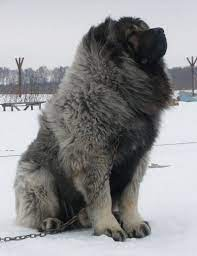

ჩემინ საყვარელი ცხოველი არის:ძაღლი კონკრეტულად ქართული ნაგაზი

კავკასიური ნაგაზი — ძაღლის ერთ-ერთი უძველესი ჯიში. უცხოურ წყაროებში წარმოშობის ადგილად კავკასია[1] ან საბჭოთა კავშირია მიჩნეული,[2] ქართული წყაროები კი მის წარმოშობას უშუალოდ საქართველოს უკავშირებენ.